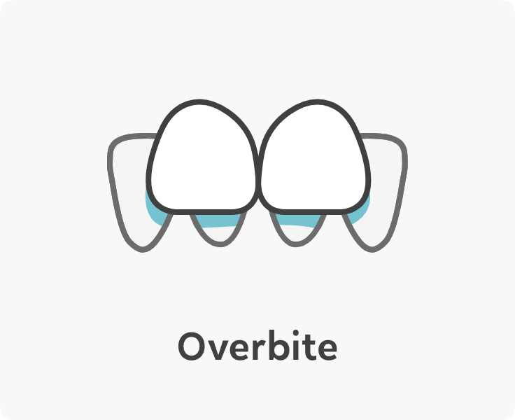

A complete Doctor-driven clear aligner experience
In-person Doctor care. Clear cut prices. Ear-to-ear smiles.
AM I A CANDIDATE?

About OrthoFX Clear Aligners
An innovative alternative to traditional braces. One of the best clear
aligner brands in the US. Orthodontic aligners designed with cutting
edge polymer.
Our doctors are with you. Every step of the way.
We like to imagine your face, face-to-face with a doctor's face,
because, face it, that's just better. Our doctors got your back
at every step.
In-person doctor consultations

Best-in-class orthodontic support

Visit only when needed
FIND A DOCTOR
Tech almost as smart as you'll look wearing it.
FASTER
Faster treatments. Double the smiles. All the safety. Math is fun.
COMFORTABLE
Aligners so comfortable and clear, it feels like wearing nothing at
all.
CONNECTED
Built-in virtual consultations and all-time digital monitoring. The
smartest tech you'll ever put in your mouth.

How our treatment works?
Follow our Smile Journey to learn exactly what it will be like to go
through an aligner treatment with OrthoFX.
HOW IT WORKS
With our app FXOntrack, get the best care anywhere.
Our contactless option lets you connect with doctors virtually and
receive treatment and advice from the comfort of your home. Try it
today!

Clear aligner treatment for orthodontic correction
We understand that it can be difficult to get the right diagnosis on
your own. It's best to leave it to the pros and as always
we've got you covered for that.



Affordable Clear Aligners' Cost.
Starting at $85/month. No Hidden Fees.
When you learn our treatments have no hidden fees, you won’t be able
to hide your smile. And when you’re finished, you won’t have to.
SEE PRICING

Choosing OrthoFX treatment was the best decision ever."
Michael Ran
VIEW RESULTS

Before
Ready for better?
See what all this teeth straightening goodness is all about. Take the
free online assessment to see if you are a candidate and get started
on your journey.
AM I A CANDIDATE?

3 Reasons why clear aligners are the best orthodontic treatment
If you haven’t heard of clear aligners yet, it’s about time you did.
Correcting teeth alignment issues has never been so easy. OrthoFX clear
aligners for teeth corrections make the whole process a seamless affair.
Let’s find out why.
NEARLY INVISIBLE
OrthoFX Clear Aligners are nearly invisible and provide you with a
discreet orthodontic treatment when compared to braces. These removable
trays made from transparent plastic fit onto your teeth like a glove and
are almost invisible to the naked eye. For example, OrthoFX clear
aligners for teeth are manufactured in a way that its surface has a high
level of adaptation to the teeth. This means they are almost hard to
detect – almost no one can see them when you wear them.
REMOVABLE
OrthoFX clear teeth aligners are removable. There’s no need to change
your food habits when you are undergoing clear aligner treatment as you
can just remove them while you are eating, drinking or brushing or
flossing your teeth. It’s important to remember to clean your clear
aligners every time you remove them before reinserting them. You can buy
clear aligners online, however, you would be handheld by a dentist from
the very first day.
COMFORTABLE
Unlike metal braces, the best online clear aligners are made from
quality plastic/polymers and can be worn with minimal discomfort.
OrthoFX clear aligners have three layers of polymer making them
comfortable to wear with some flexible properties. Most often than not
clear aligner treatment takes less time than braces.
Monday thru Friday 9AM PST – 5PM PST
415-936-0006
Support Code: 7040